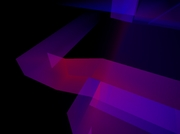
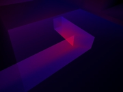
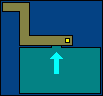
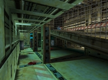
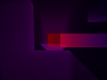
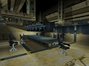
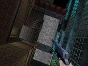

|
.
| Mysteres
de Perfect Dark : G5 Building |
| Allez
dans la Salle des Ordinateurs, la plus basse, celle avec l'Eclairage
un peu vert. Vous conaissez tous le Conduit d'Egouts où se
trouve le Fromage ? En le regardant au Rayons X, on peut voir qu'il
serpente et va beaucoup plus loin qu'on ne le croit. Regardez les
Photos ci-dessous. Première Photo, je suis un peu au-dessus
du Conduit, face à lui. Vers la droite, il s'arrete, c'est
là qu'il y a le Fromage. Vers la gauche, il continue. |



Deuxième
Photo, le Conduit tourne ensuite pour passer sous la Salle où
vous commencez la Mission. Troisième Photo, le Conduit s'arrete
net dans un angle en tournant une dernière fois. Ca correspond
à un endroit dans la Salle du début. Maintenant, et si
on entrait dans le Conduit ? Merci le Moonjump, le Passe-Muraille, comme
d'habitude. Ci-dessous, le Plan qui indique le Chemin que fait le Conduit.
Le Petit Point Jaune est le Fromage. |

Pret
pour l'Exploration ? Alors c'est dur, il faut commencer à Moon-Jumper
à partir de l'Escalier situé un peu avant l'entrée
de cette Salle. Rebondissez dans le Vide en faisant très attention
à ne pas transpercer le plafond, sinon vous allez passer au travers
et vous retrouver dans la Salle juste au-dessus. Avec de l'effort, voilà
ce qui arrive ! |



Ce
Conduit n'est pas fait pour être exploré, il bugue beaucoup,
un peu moins que le Silo de Goldeneye, mais pas mal quand même.
Les Textures sont les mêmes que dans Chicago. Juste après
le Fromage, c'est bouché, donc allons voir vers l'autre coté.
Juste après quelques metres, le Conduit fait une toute petite
pente, puis tourne sur la droite, comme le prouve l'Image faite aux
Rayons X sur la Troisième Photo ci-dessous. |




Il
n'y a rien de particulier à explorer dans ce Conduit. C'est la
même texture tout du long, et il faut user constemment du Moon-Jump
pour ne pas tomber dans le Vide. Sur la Quatrième Photo ci-dessus,
la Fin du Conduit, vue de l'exterieur, le bout étant l'extremité
à gauche. Beaucoup d'effacements, de tremblotte. Mais c'est sympa
à explorer ! |
| Salle
de Discussion |
On peut se promener tranquillement devant Mr Blonde et Cassandra tant que l'Alarme n'est pas actionnée.



Enfin,
pour le plaisir, la Statue Bafta, et un Petit Moon-Jump dans les Rues
de Chicago. Le Niveau Chicago n'est pas complet lorsque vous sortez,
il n'y a que cette partie-là. Reste un Mystere : où est
Trent ? |


